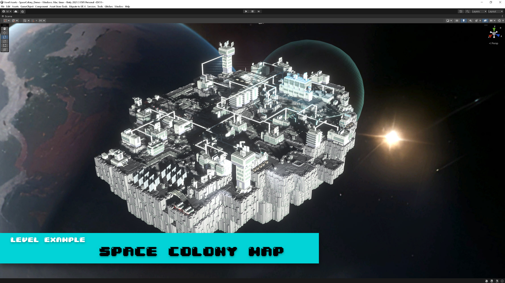
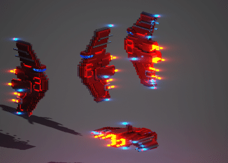
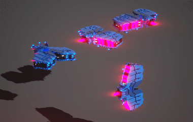
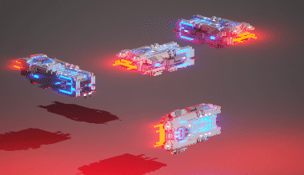
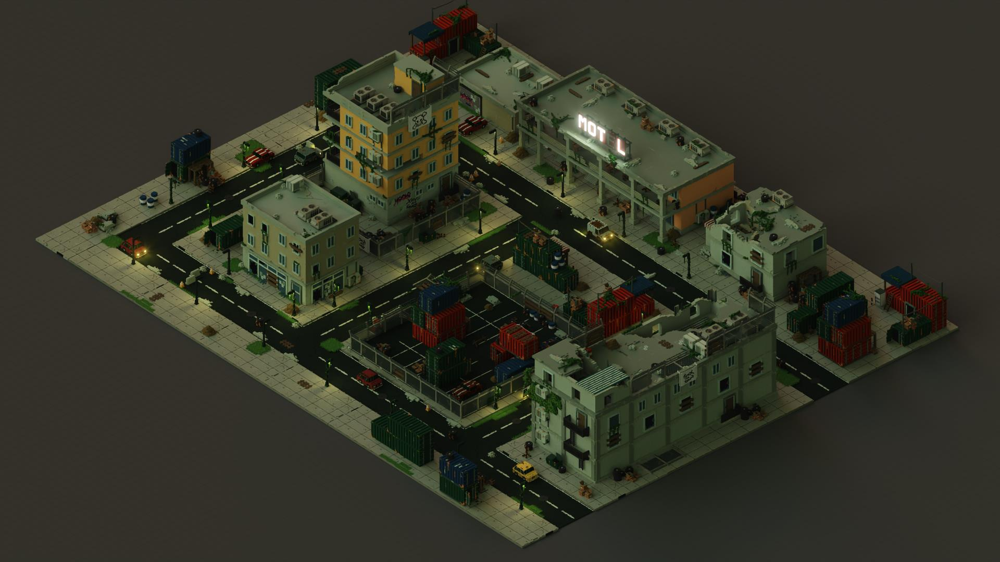
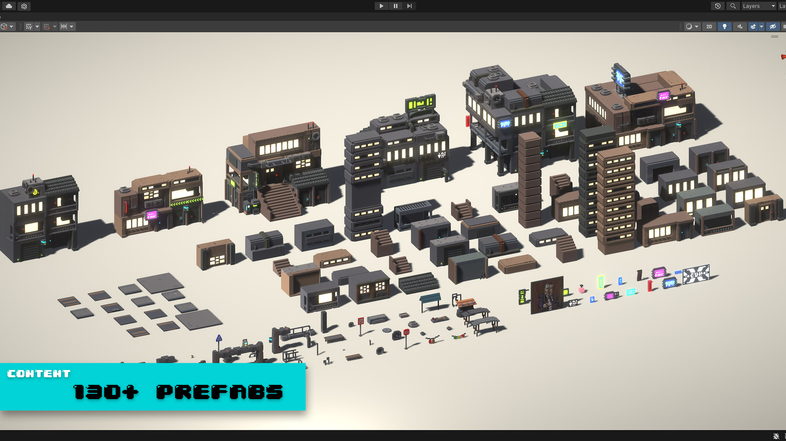
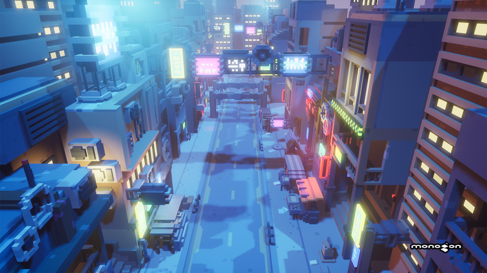
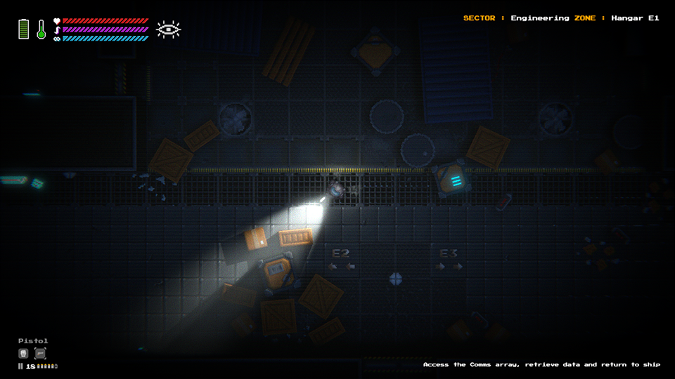
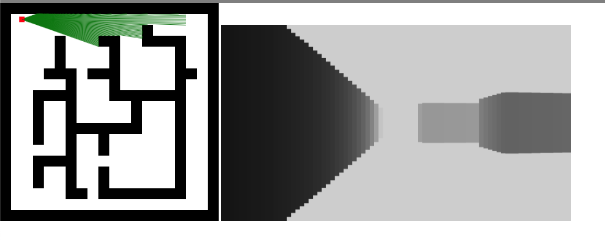
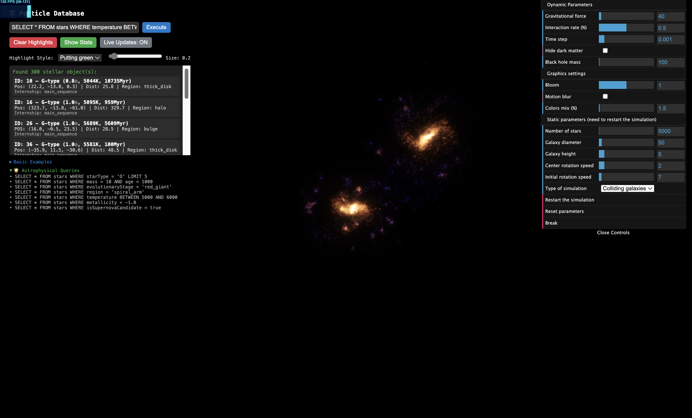

SQL SAGA
Game Design Document v2.1.7
GAME MUSIC
The soundtrack of SQL SAGA will feature a blend of ambient cyberpunk soundscapes and dynamic music that reacts to player choices and actions.
Play as you read
Example soundtrack inspiration - "Space Ambient" by grlherme
THE VISION
"In a galaxy where information is the ultimate currency, every query could be your last."
SQL SAGA is an ambitious evolution of our current educational framework. What began as "The SQL Saga: Extra-Terrestrial Loaders" - an interactive SQL learning platform - will transform into a deep, narrative-driven cyberpunk space opera that rivals The Witcher and Cyberpunk 2077 in philosophical depth and moral complexity.
Investigation Through Data
SQL queries drive narrative discovery. Your HSC (Hand-held SQL Console) is your primary weapon against corporate corruption and galactic conspiracy.
Meaningful Choices
Every decision creates ripples across the galaxy. Faction allegiances, moral stances, and data discoveries all carry lasting consequences.
Emergent Exploration
A procedurally generated galaxy with handcrafted story beats. Dynamic faction conflicts reshape the universe around your actions.
CURRENT FRAMEWORK
Dashboard View with Schema Visualization

Interactive World Map Integration

Database Schema View

What We Have Built
- Interactive SQL Console: Real-time query execution with syntax highlighting
- Dynamic Schema Visualization: Visual database structure representation
- Geographic Integration: Query results displayed on interactive world maps
- Mission Framework: Progressive learning with guided tutorials (needs work)
Our current implementation serves as the technical foundation for the expanded vision. The SQL engine, visualization systems, and educational framework will be repurposed as the core mechanics of our detective thriller.
THE NARRATIVE
"You thought you were just a data analyst. You were wrong.
You're about to become the galaxy's most wanted truth-seeker."
You're about to become the galaxy's most wanted truth-seeker."
Concept art for the corporate space station, not my own.

Space Station
Main Narrative Arc
The player begins as a down-on-their-luck data analyst taking a corporate job to survive. Through investigating seemingly routine corporate data, they uncover a web of corruption, conspiracy, and galactic-scale conflict that threatens the stability of entire star systems.
Information as Power
Knowledge determines survival and success in this data-driven galaxy
Corporate Corruption
The price of unchecked corporate influence across star systems
Individual Agency
How one person's choices can impact entire galactic systems
Truth vs. Survival
Sometimes knowing the truth comes at a dangerous cost
The player character evolves from a passive corporate employee to an active agent of change, developing from someone who follows orders to someone who makes decisions that shape the galaxy's future.
Opening Sequence: "The Analyst's Awakening"
Act 1: The Interview
The player awakens in a cramped apartment on Nexus Station, a mid-tier space station struggling with economic decline. A message from DataCorp Solutions offers hope—a group interview for an Analyst position.
Subject: Group Interview for Analyst Position
Hello [Player Name],
We are excited to announce a group interview opportunity for an Analyst position. If interested, please visit DataCorp Solutions. We've recently been registered in the galactic HSC database—look us up!
Best regards,
[Manager Name]
DataCorp Solutions
Hello [Player Name],
We are excited to announce a group interview opportunity for an Analyst position. If interested, please visit DataCorp Solutions. We've recently been registered in the galactic HSC database—look us up!
Best regards,
[Manager Name]
DataCorp Solutions
Act 2: First Steps
- HSC Tutorial: Player learns to query the galactic database to research DataCorp
- Navigation: Following database-generated waypoints to reach the company
- Initial Assessment: SQL competency test during the interview process
- Employment: Acceptance into DataCorp as a junior analyst
Act 3: The Discovery
- Routine Work: Training missions that teach advanced SQL concepts
- Suspicious Activity: Encounter with [Rebel Contact Name], an apparent corporate infiltrator
- The Choice: First major decision point—report the suspicious employee or investigate further
The Asteroid Conspiracy
The central mystery revolves around DataCorp's mining operations in the Kepler Asteroid Field. What begins as routine data analysis reveals a complex web of corporate malfeasance and faction warfare.
🚨 Safety Violations
DataCorp ignoring critical safety protocols in their mining operations
📂 Cover-ups
Systematic deletion of incident reports and whistleblower testimonies
⚔️ Competing Interests
The Miners' Coalition faction seeking to expose the truth
🎭 Hidden Agenda
The Coalition's true motivation—seizing the asteroid field for themselves
Branching Consequences: Three Paths Forward
PATH A
🏢 Corporate Loyalty
- • Player reports the infiltrator
- • Gains access to higher corporate clearance
- • Uncovers Coalition's ulterior motives
- • Leads to corporate counter-intelligence missions
PATH B
📢 Whistleblower
- • Player allies with the Coalition
- • Exposes corporate corruption
- • Faces corporate retaliation
- • Opens faction-based questlines
PATH C
🔍 Independent Investigation
- • Player gathers evidence independently
- • Reveals both corporate and Coalition corruption
- • Enables formation of new "Protector" faction
- • Unlocks unique neutral storylines
Long-term Galactic Consequences
The asteroid situation escalates into one of three major outcomes that reshape the entire galaxy:
🏢 Corporate Victory
Station becomes corporate-controlled, increased security but decreased freedom. Citizens live under surveillance but with guaranteed employment and safety.
⚒️ Coalition Takeover
Economic collapse as Coalition proves incapable of management. Freedom increases but resources dwindle and infrastructure deteriorates.
🛡️ Protector Solution
New faction emerges with a balanced approach, but ongoing political tension creates dynamic, ever-changing galactic landscape.
"Your choices don't just change your story—they rewrite the fate of entire civilizations."
GAME SYSTEMS
"Every system is interconnected—your database skills, faction standing, and ship configuration all determine your path through the galaxy."
Database Progression System
Your Hand-held SQL Console (HSC) evolves throughout the game, gaining access to increasingly sensitive and valuable information networks.
Data Access Levels
📊 Public Records
Basic company information, public announcements, available to all citizens
🏢 Restricted Corporate
Employee records, internal communications, requires corporate clearance
🛡️ Classified Government
Security reports, faction intelligence, highly restricted access
🕳️ Black Market
Illegal data, criminal networks, dangerous but valuable information
🌐 Deep Web
Hidden conspiracy information, faction secrets, ultimate truth
Information Acquisition Methods
- Purchase: Direct currency transactions for legal data access
- Trade: Information bartering with NPCs and contacts
- Quest Rewards: Completing missions unlocks new database access
- Exploration: Scanning objects and locations reveals hidden data
- Social Engineering: Conversations with NPCs reveal classified information
- Hacking: Illegal access to restricted systems (high risk, high reward)
Modular Ship Building System
Your ship is more than transportation—it's your mobile headquarters, investigation platform, and lifeline in hostile space.

Corporate Cruiser

Mining Vessel

Scout Ship
🚀 Hull Type
Determines base capacity, durability, and aesthetic. From sleek corporate vessels to rugged industrial haulers.
⚡ Engine Array
Speed, fuel efficiency, and travel range. Better engines unlock distant sectors and escape routes.
📡 Scanner Package
Database query range and object detection. Advanced scanners reveal hidden clues and data sources.
🔫 Weapons Systems
Combat capabilities and power consumption. Necessary for survival but affects faction relationships.
📦 Storage Modules
Cargo capacity and specialized storage for evidence, data archives, and valuable resources.
🏠 Living Quarters
Crew capacity and comfort rating. Better quarters attract skilled crew members and contacts.
💻 Database Terminal Integration
Your ship's Database Terminal provides enhanced HSC functionality when docked, including:
- • Extended query processing power for complex investigations
- • Secure communication with trusted contacts and informants
- • Advanced data visualization and pattern recognition
- • Encrypted storage for sensitive evidence and discoveries
Dynamic Faction Reputation System
Every action ripples through the galaxy's political landscape. Faction standing determines available quests, accessible areas, and story outcomes.
DATACORP
🏢 DataCorp Solutions
Focus: Corporate control, profit maximization
Resources: Advanced technology, financial power
Questlines: Corporate espionage, hostile takeovers
Rewards: High-end equipment, monetary compensation
COALITION
⚒️ Miners' Coalition
Focus: Worker rights, resource distribution
Resources: Raw materials, grassroots networks
Questlines: Labor disputes, exposing corruption
Rewards: Ship components, faction loyalty bonuses
PROTECTORS
🛡️ The Protectors (Unlockable)
Focus: Station security, balanced governance
Resources: Military assets, diplomatic connections
Questlines: Peacekeeping, investigation support
Rewards: Unique equipment, special access privileges
TRADERS
🚛 Independent Traders
Focus: Free commerce, information brokering
Resources: Market networks, smuggling routes
Questlines: Trade runs, information gathering
Rewards: Rare components, market access
Reputation Mechanics
- • Standing Levels: Hostile (-100) to Trusted (+100)
- • Cross-Faction Impact: Actions affecting multiple factions simultaneously
- • Redemption Paths: Opportunities to repair damaged relationships
- • Hidden Factions: Secret organizations revealed through investigation
"In the galaxy of information warfare, your reputation is your most valuable currency."
GAMEPLAY EVOLUTION
From Learning Tool to Detective Thriller
Our current educational missions will evolve into investigation cases. Instead of learning basic SQL for academic purposes, players use complex queries to:
- Uncover corporate cover-ups by analyzing deleted records
- Track financial flows between competing factions
- Decode encrypted communications using pattern recognition
- Identify double agents through behavioral data analysis
- Predict faction movements using historical trend analysis

Hand-held SQL Consoleem>
The HSC System
Your Hand-held SQL Console becomes more than a learning tool - it's your lifeline in a hostile galaxy:
- Limited Storage: Forces strategic decisions about what data to keep
- Upgradeable Processing: Better hardware enables more complex investigations
- Network Dependent: Different locations provide access to different databases
- Security Risks: Advanced queries might trigger corporate security systems
FACTION WARFARE
DataCorp Solutions
Philosophy: Corporate efficiency through information control
Methods: Surveillance, data monopolization, economic pressure
Questlines: Corporate espionage, hostile takeovers, "cleaning" inconvenient data
Methods: Surveillance, data monopolization, economic pressure
Questlines: Corporate espionage, hostile takeovers, "cleaning" inconvenient data
The Miners' Coalition
Philosophy: Worker solidarity and resource equality
Methods: Labor strikes, data leaks, grassroots organizing
Hidden Truth: Their idealism masks a desire to replace corporate tyranny with their own
Methods: Labor strikes, data leaks, grassroots organizing
Hidden Truth: Their idealism masks a desire to replace corporate tyranny with their own
The Protectors (Unlockable)
Philosophy: Balanced governance through transparency
Requirements: Can only be formed through specific narrative choices
Challenge: Maintaining ideals while wielding necessary power
Requirements: Can only be formed through specific narrative choices
Challenge: Maintaining ideals while wielding necessary power
"Every faction believes they're the hero of their own story.
Your job is to decide which story you want to live in."
Your job is to decide which story you want to live in."
TECHNICAL EVOLUTION
Current Foundation
Frontend:
HTML5, CSS3, JavaScript
HTML5, CSS3, JavaScript
Database:
SQL.js, AlaSQL for processing
SQL.js, AlaSQL for processing
Visualization:
OpenLayers, Chart.js, Custom libraries
OpenLayers, Chart.js, Custom libraries
Audio:
8-bit Fantasy, Ambient Themes
8-bit Fantasy, Ambient Themes
Future Technical Goals
Phase 1: Enhanced Web Implementation
- Advanced 2D raycasting engine for station interiors
- Procedural galaxy generation
- Dynamic faction AI systems
- Enhanced audio implementation
Phase 2: Engine Migration
- Unity/Unreal/Bevy for enhanced graphics
- 3D ship customization and combat
- Advanced physics simulation
- VR compatibility considerations
VISUAL IDENTITY
Our visual evolution will blend cyberpunk corporate dystopia with classic space opera adventure, emphasizing the contrast between sterile corporate environments and the vast, mysterious cosmos.



Concept art of environment as voxelsColor Psychology
- Corporate Areas: Cool blues and sterile whites suggest surveillance and control
- Industrial Zones: Warm oranges and rust browns evoke worker solidarity
- Space Environments: Deep purples and cosmic blues represent freedom and mystery
- Data Interfaces: Bright greens and amber create technological authenticity

Raycasting example:
Source: Xenosis: Alien Infection

Basic Raycasting Example, I think the simplicity of this is really good.
DEVELOPMENT ROADMAP: Arbitrary deadlines and timeline
PHASE 1
Proof of Concept (Current Phase)
Goal: Establish core mechanics and technical feasibility for the detective thriller transformation
Core Features Progress
Completed Features:
- Fundamental database integration
- Initial ship building mechanics
- Visual Overlay
In Progress:
- Story elements integration
- Galaxy generation prototype

Generates a universe or galaxay with particles. Each particle is collected within a databased and is queryable with SQL and get highlighted in green.Not Started:
- Interactive world map for spacestation
- 2D and 3D sections
- Artwork/models
- PostgreSQL backend setup
- Space station navigation
- Initial faction system implementation
- Basic ship customization
- Opening story sequence completion
- Mission framework overhaul
Success Metrics
- Player can complete full opening sequence (30-45 minutes)
- All core SQL mechanics functional and engaging
- Basic faction choice consequences implemented
- Ship building tutorial complete
PHASE 2
Minimum Viable Product
Timeline
6-8 months from proof of concept
Target Content
2-3 hours of compelling gameplay
Core Goal
Complete opening arc with all three major endings
Expanded Features
- Complete Opening Arc: Full DataCorp storyline with all three major endings
- Core Ship Building: Essential ship customization with functional impact
- Faction System: All major factions with basic questlines
- Galaxy Generation: At least 3 fully developed star systems
- Enhanced UI/UX: Polished interface design and user experience
Monthly Development Cycle
Monthly milestone reviews and feature iteration with community feedback integration throughout development
PHASE 3
Full Release Vision
Ultimate Goal: Complete galaxy with 15+ hours of content rivaling AAA detective games
Complete Feature Set
🌌 Expanded Universe
10+ star systems with unique characteristics and storylines
🚀 Advanced Ship Building
Complex component interactions and deep customization
🏛️ Deep Faction Politics
Intricate relationship web with long-term consequences
🔍 End-game Content
High-level investigations and galactic-scale mysteries
Post-Launch Support Strategy
- 🌟 Content Updates: New star systems, factions, and story arcs
- 👥 Community Features: Player-created content tools, shared databases
- 📱 Platform Expansion: Console adaptations, mobile companion apps
- 🤝 Multiplayer Consideration: Collaborative investigation features
Steam Early Access Pathway
Platform consideration for Phase 3 with community-driven development and regular content updates
EXPERIENCE THE CURRENT PROTOTYPE
Document Version 2.1.7 | Last Updated: May 2025